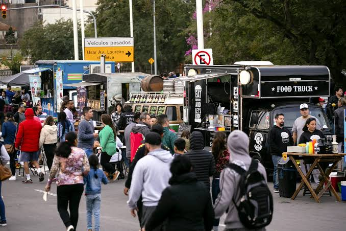
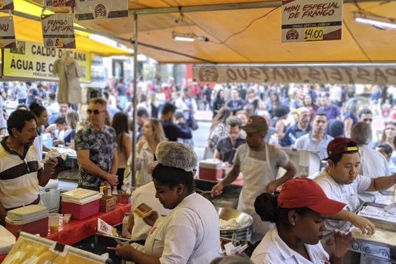
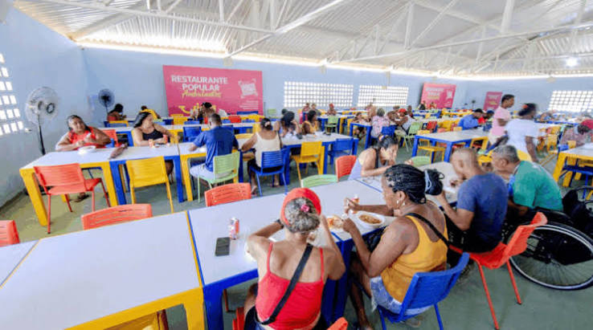
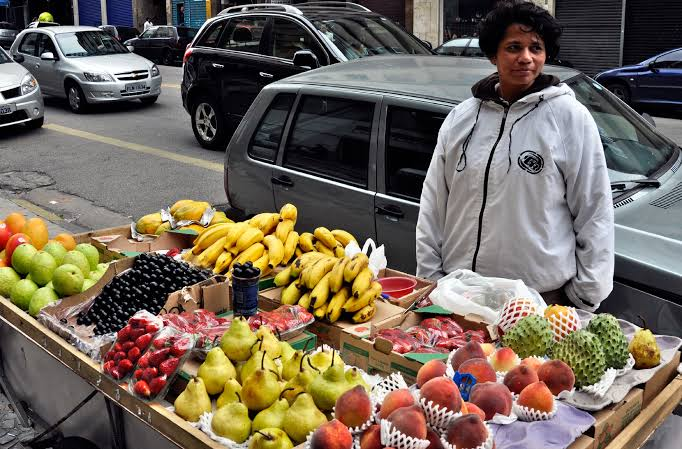

Comércio ambulante
O segmento reúne diferentes formatos de venda e atendimento de alimentos em espaços públicos e eventos.
Atuação no segmento de serviços ambulantes de alimentação, com foco em praticidade, proximidade e atendimento acolhedor em Catalão e região.


A empresa 62.150.262 Josiele da Silva Farias Messias atua no ramo de serviços ambulantes de alimentação. Nosso site apresenta informações institucionais e facilita o contato para dúvidas e solicitações.
Acreditamos que a alimentação faz parte da vida cotidiana e dos encontros da comunidade. Por isso, buscamos manter uma comunicação clara, acessível e respeitosa com quem entra em contato.
Leia mais sobre a empresaConheça alguns ambientes relacionados ao segmento de alimentação e comércio de alimentos.

O segmento reúne diferentes formatos de venda e atendimento de alimentos em espaços públicos e eventos.

O comércio de alimentos aproxima produtos, consumidores e a rotina das comunidades locais.
Espaços de alimentação ajudam a criar momentos de pausa, convivência e partilha.
As imagens são ilustrativas e representam ambientes do setor de alimentação; não indicam necessariamente estabelecimentos próprios ou serviços específicos disponíveis.